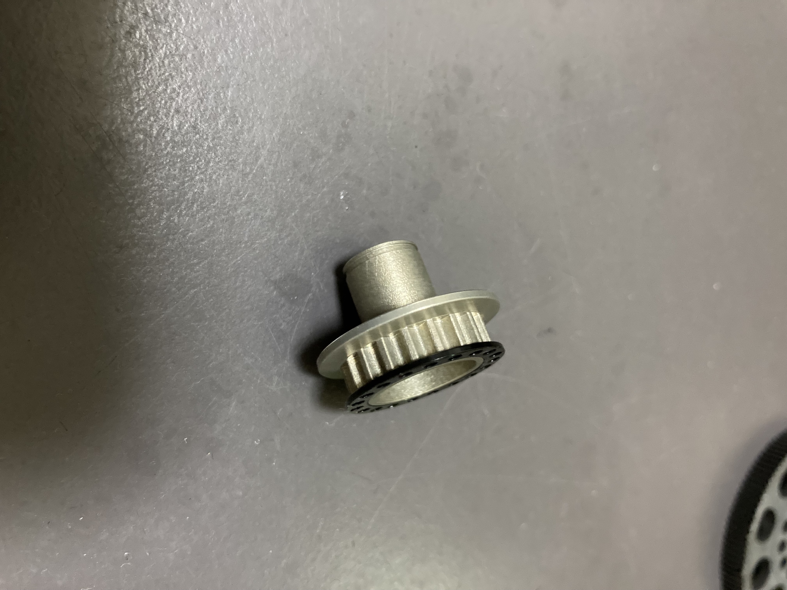

プーリー製作
■駆動系の改善 レース目線で考える商品販売
ベルトプーリー
先月から作成している商品が完成しました。
今回の商品は、中国の企業のOEM商品であったセンタープーリーの破損によって、大事な全日本選手権で、結果を残す事ができませんでした。
OEM先の企業に問い合わせても、対策を打ってもらうことはできないとの通達があっため、自分のブランドで製作、販売をしようと言った事で、今回の制作に至りました、

今回拘ったところ
・コーティング
コーティングに関しては今回こだわりを持って製作しました。ラジコンで重要となる駆動系パーツの政策であったため、スムーズさが必要とされる部品であったため、コーティングの種類をこだわり抜きました。
具体的には、プーリーにカシマコートをかけることによって、抵抗をできるたげ減少させました。
抵抗を減少させたことによって、ストレートスピードが３キロ上がり、走行後のパワーユニット（モーターなど）の温度を１０度近く減少させる事ができました。
・プーリーの歯数
プーリーの歯数を純正の20枚から19枚に変更しました。
プーリーの歯数を変更することによって、ギヤ比の変更、二次減速比を変更しました。変更したことによって、車でいうところのエンジンブレーキの掛かりが良くなり、コーナー侵入時の姿勢が良くなり、グリップの向上につながりました。
・プーリーの強度
今回のプーリーの強度は、純正品より、約３倍強化されています。ねじ止めに加えて、嵌め込み式に形を変更することによって、安全性を向上させました。
悪かった点
・モノにこだわりすぎで、想像以上の価格での販売になってしまった。これに関しては、改善していきたい部分ではあり、３Dプリンターを利用することによって安価な商品を作っていくことも考えている。
夏休み行っていくこと
ラジコンカーは非常に高価である部品が多いため、壊れると修理に大きな金額がかかる。高価な部品を壊さないためのパーツ製作。それを３Dプリンターなどを用いいて製作するのは良いのではないかと考えている。